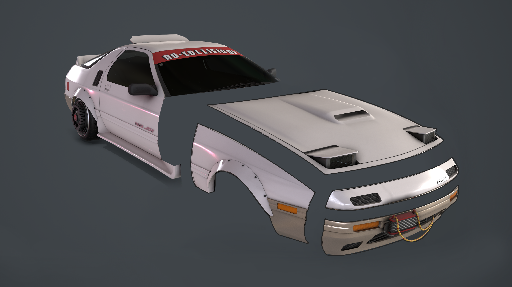

Current Project – Verge
Verge was spawned with two co-relating goals of a software engineer (David Rach) and an artist (myself) of simulating accurate vehicle physics and accurately modelling a vehicle. The choice of vehicle was the 1986 Mazda RX-7 FC.
RX-7 MKI
The first pass of the RX-7 was stock standard with a black body and alloy two piece wheels, however the MKI was fairly rough around the edges. Problems included were:
- Tyre walls being too sharp of an angle
- Shoddy attempt at tyre tread
- Ugly geometry of the two piece wheels that bounced light horribly
- Generally holding more polys than it needed
RX-7 MKII
The second pass of the RX-7 cleaned up the geometry. This included:
- Fully replaced wheels and tyres that sported a corrected attempt at tyre tread
- A lot of poly culling throughout the vehicle
- A grunge brass respray
The design of the wheels were inspired by Batou’s Lotus Esprit in the live action Ghost In The Shell movie, while the inspiration behind the louvered tail lights arose from the hero vehicle of Cyberpunk 2077s E3 trailer.
RX-7 MKIII
The final pass of the RX-7 saw a massive change:
- Even more polys were stripped off the body
- An aero fin cut into the roof
- Mazda badges
- JDM inspired number plate
- A new exhaust system
- A ducktail spoiler
- Bolt on fenders
- A front mounted oil cooler
- Rear quarter air intakes inspired by Toyota’s MR2
- An interior silhouette
- A more optimised UV layout
- New textures
- Two new sets of wheels (front and rear) with a fresh set of extra wide tyres on both
Final Word
Working on this project has taught me a lot about different styles of modelling. In addition to this, I also gained more of an appreciation of the engineering behind vehicles. If I were to do this again, I would like to try yet another style of modelling, in particular using a method that involves using NURBS to achieve the intricate curves of the car body.
Another lesson of note is how important it is to use real world measurements when collaborating with a software engineer (especially when dealing with physics). This was good for me as it introduced to me the dynamic of working with people in different fields.
Future Work
The goal of this project is to create a chassis that can fit a collection of parts inspired by Japanese cars from 1990 to the early 2000’s with a selection of American and European classics thrown in. Due to the variation in body measurements and wheelbase, the parts created will not be accurate to the real world reference; this will create an interesting challenge with an equally interesting outcome. The goal is to be able to swap out any parts (e.g. the front bumper or the trunk lid and rear window) and create fully unique and awesome builds (e.g. a Nissan 180sx rear with a Pontiac Firebird front).
